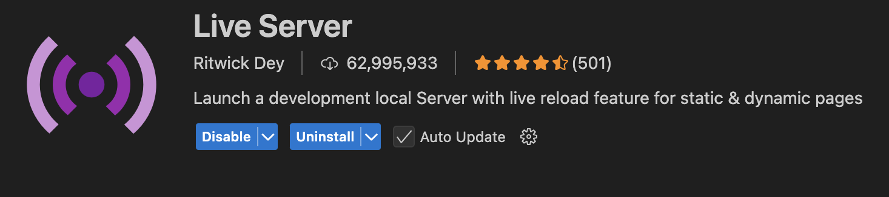

.png)
Configuratie
Voor het maken van deze applicatie gaan we een code editor gebruiken, in deze applicatie gebruiken we Visual Code Studio. Dit is een gratis code editor die je kan downloaden via de website van Microsoft.
Op basis van je operating system kan je de juiste versie downloaden op deze link
Eens je dit gedownload zal je account moeten maken, dit kan je doen via de website van Microsoft.
Eens je een account hebt kun je het programma openen en beginnen aan je applicatie.
Voor we beginnen met code zal je eerst een extensie nodig hebben die al je wijzingen van je code visueel weergeeft op je HTML pagina.
Deze extensie ziet er zo uit: 
Als je deze extensie hebt gevonden mag je gewoon simpelweg op "install" klikken
Goed! Nu dat we dit hebben kunnen we beginnen met onze mappenstructuur
Mappenstructuur
Eens je Visual Studio Code hebt geopend kun je beginnen aan je mappenstructuur.
Maak de volgende folders aan:
- CSS -> Hier komen je styling bestanden
- JS -> Hier komen je script bestanden
- Assets -> Hier komen je afbeeldingen, audio bestanden en andere assets
- Assets/images -> Hier komen je afbeeldingen
- Assets/audio -> Hier komen je audio bestanden
- Assets/favicon -> Hier komen je favicon
- Assets/fonts -> Hier komen je lettertypes
Eens deze folders zijn gemaakt kunnen we overgaan naar stap 2